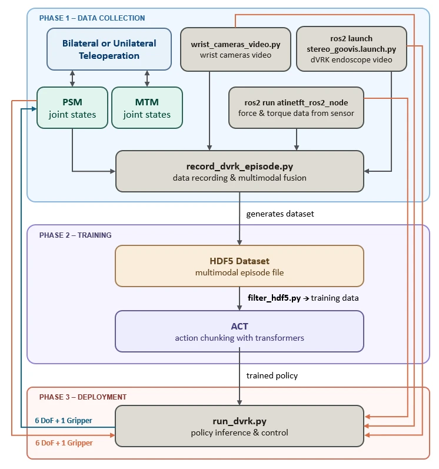

Alliance AI Lab
Johns Hopkins University
Research Assistant · Prof. Haimin Hu
ROBOTICS · HUMAN–ROBOT INTERACTION · AI FOR HEALTH
Building robots that learn from people
and interact with the world.
My research connects multimodal human–robot interaction, surgical robot learning, and computational sensing. I received my M.S.E. in Computer Science from Johns Hopkins University in May 2026, following a double major in Pure and Applied Mathematics and Computer Science at Boston University.
People and places shaping my work.
Johns Hopkins University
Research Assistant · Prof. Haimin Hu
Baltimore, Maryland, USA
Research Intern · Dr. Kemar Green
Johns Hopkins University
Research Assistant · Prof. Peter Kazanzides
Johns Hopkins University
Research Assistant · Prof. Chien-Ming Huang
IDEAS, SYSTEMS & EXPERIMENTS
Watch the work. Try the tools.
8 projects shown
Driving interface · recorded experiment
ROBOTICS
With the Alliance AI Lab and collaborators at Princeton, I explore learning for dynamics and control on the F1TENTH platform. This video shows the driving interface used in our experiments.
Workflow
Ongoing · Alliance AI Lab, Johns Hopkins University
ROBOTICS
I am extending the Human-Centered Safety Filter (HCSF) with a cognitive layer that combines vision-language models, haptic feedback, and visual and voice cues. The goal is to make safety interventions responsive to human intent and easier to understand.
Proposed workflow · in development
Manuscript in preparation · Target: Robotics: Science and Systems (RSS)
VR teleoperation · research demonstration
ROBOTICS
I co-developed a dVRK teleoperation system connecting ROS and Unity, markerless object tracking, and multiple views of a shared digital twin. I also contributed to VR control, user experiments, and analysis.
Workflow

Accepted · IEEE/RSJ International Conference on Intelligent Robots and Systems (IROS), 2026
AMBF simulation / dVRK hardware · select a video above
ROBOTICS
I built AMBF simulation and data-collection pipelines, added force inputs to Action Chunking with Transformers (ACT), and studied generalization to unseen task positions. Our project connects haptic demonstrations with autonomous manipulation on the dVRK.
Workflow

Manuscript in preparation · Target: IEEE Robotics and Automation Letters (RA-L)

Research interface · figure from our paper
HEALTH
At the Intuitive Computing Laboratory, I developed data pipelines and clinician-facing visualizations that connect sleep metrics with the conversations behind them. Our studies explore how voice diaries capture everyday context and support clinical interpretation.
Workflow
ACM HEALTH · Major revision / CHI 2027 · Under review

Monitoring → reflection → education
HEALTH
I contributed to DREAM—Discovery, Reflection and Education for Awareness and Management of Sleep—a conversational assistant that helps people reflect on changes in their sleep and connect those changes to everyday experiences.
Workflow
Under review · ACM Conference on Human Factors in Computing Systems (CHI), 2027
Live browser application · not a clinical diagnostic tool
INTERACTIVE
At NeuroAgent AI, I build interactive eye-movement simulation and compare learned motion models with geometric baselines. Explore virtual targets, recorded gaze replay, and model behavior in the browser.
Workflow
NeuroAgent AI · Research prototype
Live browser application · not a clinical diagnostic tool
INTERACTIVE
I develop video-based eye tracking with head-pose correction, quality checks, and review tools for examiner-led gaze assessment. We are also exploring deployment and data collection in Zambia.
Workflow
NeuroAgent AI · Research prototype
* Equal contribution
IROS 2026 · Accepted
C. Liu*, C. Yu*, H. Zhao*, H. Ding, H. Wei, A. Munawar, M. Unberath, and P. Kazanzides.
ACM HEALTH · Major revision
A. Mahmood*, B. Kim*, H. Zhao, M. E. Atwood, L. F. Buenaver, M. T. Smith, and C.-M. Huang.
CHI 2027 · Under review
B. Kim*, A. Mahmood*, H. Zhao, M. E. Atwood, L. F. Buenaver, Z. Xiao, and C.-M. Huang.
CHI 2027 · Under review
A. Mahmood, B. Kim, H. Zhao, M. E. Atwood, L. F. Buenaver, M. T. Smith, and C.-M. Huang.
H. Zhao, V. Kamath†, S. Terala†, and U. Tumerdem.
In preparation for submission to IEEE Robotics and Automation Letters (RA-L). † Equal second authorship.
H. Zhao*, N. Baek*, S. Hu, Y. Wang, B. Qu, and H. Hu.
In preparation for submission to Robotics: Science and Systems (RSS).
Working titles; these manuscripts have not yet been submitted.